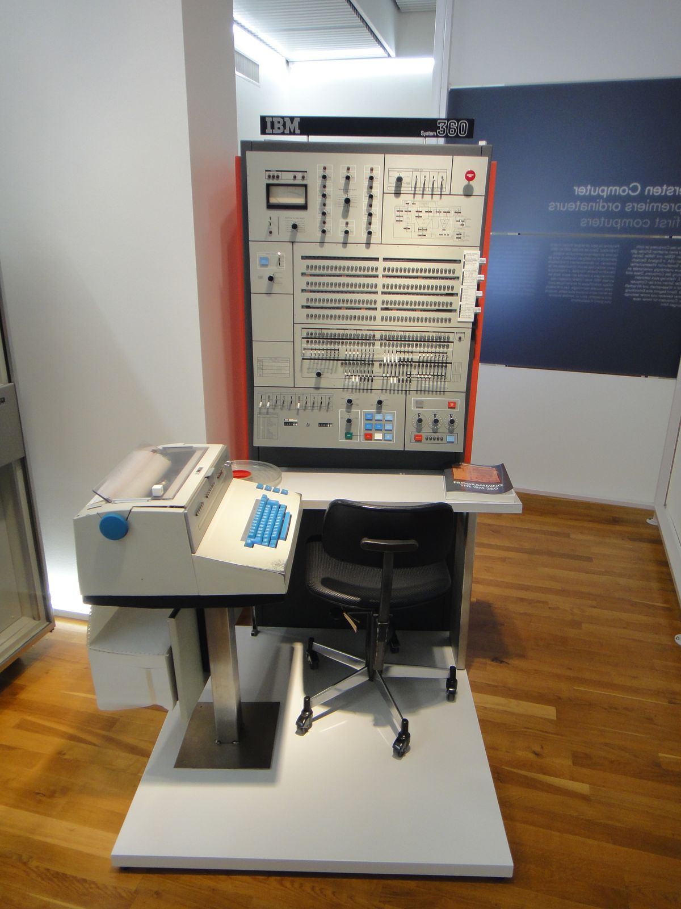
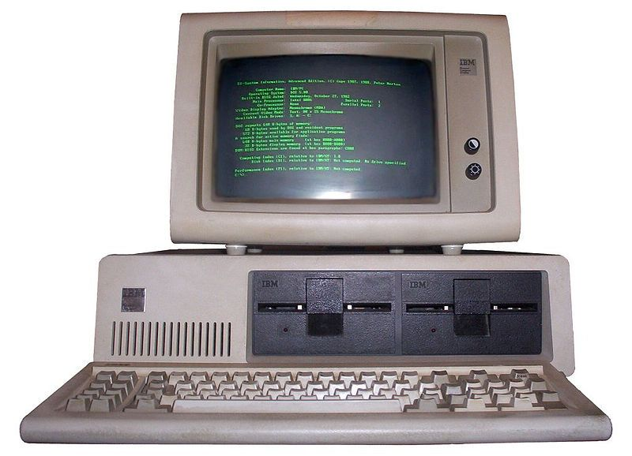

Koleksi Komputer
Dari era 1940-an hingga modern

1945
ENIAC
Komputer Elektronik Pertama
Electronic Numerical Integrator and Computer

1964
IBM System/360
Mainframe Computer
Keluarga komputer mainframe revolusioner

1977
Apple II
Personal Computer
PC pertama dengan grafis berwarna

1982
Commodore 64
Home Computer
Komputer pribadi terlaris sepanjang masa

1981
IBM PC 5150
Personal Computer
PC yang mendefinisikan standar industri

2006
MacBook (Intel)
Laptop
Laptop pertama Apple dengan processor Intel